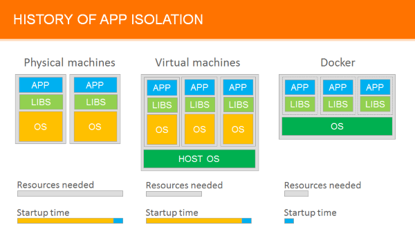
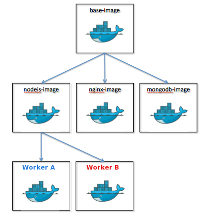
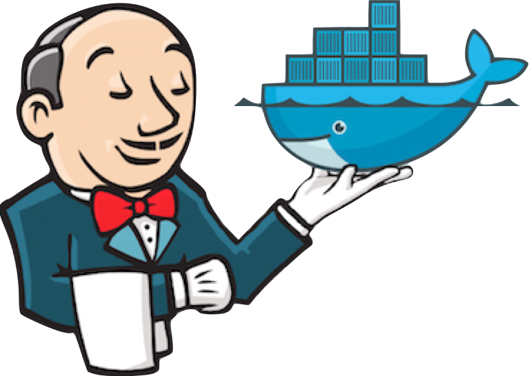
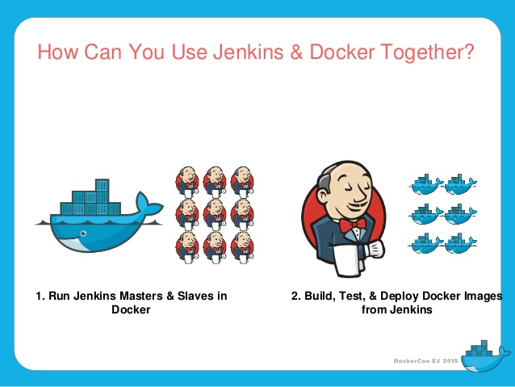

Docker
Tech Talk
Wat is docker?
En wat kunnen wij er mee?

Evolutie van applicatie isolatie
VM's vs containers
- Allereerst: VM's en containers zijn complementair
- VM's kunnen het best gebruikt worden om stukken hardware toe te wijzen
- Containers werken op proces niveau, wat ze erg licht maken en heel geschikt als unit van software delivery
VM's vs containers
1. Snapshots maken is sneller met Docker dan met VM's.
- Omdat je meestal voortbouwt bovenop bestaande images zoals 'ubuntu:14.04', hoef je slechts zelden een snapshot te maken van het hele OS.
- Je hoeft alleen een snapshot te maken van je veranderingen: dit gebeurt automatisch.
- Deze mogelijkheid om het OS in een gemeenschappelijk image te stoppen maakt het deployen op andere hosts eenvoudig en sneller.
VM's vs containers
2. Startup tijd is minder voor containers dan voor VM's.
- VM heeft minuten nodig om op te starten.
- Containers starten in seconden, soms minder dan een seconde.
VM's vs containers
3. Docker images zijn beter overdraagbaar.
Docker images bestaan uit lagen. Wanneer we een image pullen of pushen, worden alleen de lagen die nog niet in de cache staan overgedragen. Dat betekent dat als we meerdere images hebben die gebaseerd zijn op dezelfde basis OS, dat we dan de basis laag maar 1 keer hoeven te maken of te downloaden. VM's hebben deze flexibiliteit niet.
VM's vs containers
4. Versioning is mogelijk met Docker images.
$ docker commit -m "Added more restrictive pg_hba.conf." \
-a "Sander Smits" 0b2616b0e5a8 nens/postgres:9.5VM's vs containers
5. Docker images hebben geen state.
- In Docker terminologie: een read-only laag wordt een image genoemd. Een image verandert nooit.
- Omdat Docker een Union File System gebruikt, denken de processen dat het hele file system is gemount als read-write.
- Maar, alle veranderingen komen in de bovenste writeable laag.
- Daaronder blijven de originele files in het read-only image onaangetast.
- Omdat images niet veranderen, hebben ze geen state en zijn ze immutable.
VM's vs containers
6. VM's zijn hardware-centrisch en containers zijn applicatie-centrisch.
Stel we hebben een container image van 1 GB. Als we een VM zou willen gebruiken als alternatief, dan zouden we 1 GB x het aantal VM's dat we willen nodig hebben. Met Docker kunnen we grootste deel van die 1 GB delen. Dus als we 1000 containers met hetzelfde OS hebben heb je maar iets meer dan 1 GB nodig om ze allemaal te runnen.
Docker
- "Een open platform voor ontwikkelaars en systeembeheerders om gedistribueerde applicaties te bouwen, verschepen en te draaien."
- Een manier om je applicaties en hun dependencies te isoleren van hun omgeving.
- Lichtgewicht containers
- Beschikbaar voor de meeste Linux distro's
Linux?
Maar, ik heb een Mac!
Geen probleem.
Gebruik docker-machine met VirtualBox.
ook voor Windows
Lichtgewicht containers
Wat is een container eigenlijk?

Anatomie van een container

Containers zijn gelaagd
voorbeeld van Dockerfile
# inframan/dockerfiles/base/Dockerfile.ubuntu-14.04-base
FROM ubuntu:trusty
MAINTAINER Sander Smits <sander.smits@nelen-schuurmans.nl>
# system dependencies
RUN apt-get update && apt-get install -y \
python-software-properties wget build-essential git \
libevent-dev libfreetype6-dev libgeos-dev \
libhdf5-serial-dev libpng12-dev mercurial python-dev \
python-lxml python-mapnik python-numpy python-pip \
python-pyproj python-pysqlite2 python-psycopg2 python-sympy \
python-scipy spatialite-bin gdal-bin libgdal1h libnetcdf-dev \
netcdf-bin python-gdal
# pip packages
RUN pip install matplotlib six
$ docker build -t nens/ubuntu-14.04-base \
-f Dockerfile.ubuntu-14.04-base .Voorbeeld van overerving
# inframan/dockerfiles/threedi/Dockerfile.subgrid-flow-base
FROM dockrepo.lizard.net/nens/ubuntu-12.04-base
MAINTAINER Sander Smits <sander.smits@nelen-schuurmans.nl>
# run buildout and install calculation cores
...
# put custom supervisord.conf in place
ADD supervisord.conf /srv/parts/supervisor/supervisord.conf
WORKDIR /srv
$ docker build -t threedi/subgrid-flow-base \
-f Dockerfile.subgrid-flow-base .Image pushen naar onze Docker registry
Een Docker registry is een repository voor Docker images.
$ docker images | grep threedi/subgrid-flow-base
threedi/subgrid-flow-base latest 9caa7caa5ef2 ... 2.116 GB$ docker tag 9caa7caa5ef2 dockrepo.lizard.net/threedi/subgrid-flow-base
$ docker images | grep threedi/subgrid-flow-base
threedi/subgrid-flow-base latest 9caa7caa5ef2 ...
dockrepo.lizard.net/subgrid-flow-base latest 9caa7caa5ef2 ...
$ docker push dockrepo.lizard.net/threedi/subgrid-flow-base
Officiele Docker registry
- https://hub.docker.com
- > 100.000 Docker images
$ docker run -it --rm python:3.5.1 python
Python 3.5.1 (default, Mar 9 2016, 03:30:07)
[GCC 4.9.2] on linux
Type "help", "copyright", "credits" or "license" for more information.
>>>
Images versus containers
Wat kan Docker voor ontwikkelaars betekenen?
- Het is snel
- Het is HEEL snel: container start in seconden of minder!
- Nauwelijks overhead / minimaal gebruik van extra resources
- Run tientallen zo niet honderden containers op je laptop
- Draai eenvoudig je productie stack lokaal
- Continuous delivery (CD) is eindelijk echt mogelijk, dankzij een deployable artefact dat zich overal hetzelfde gedraagt
Wat kan Docker voor (dev)ops betekenen?
- Eenvoudigere server setups
- Scriptable infrastructure
- Snelle en reproduceerbare deployments
- Rollback = wijs load balancer (LB) naar vorige container(s)
- Schaalbaarheid: zet meer containers achter de LB (in seconden). Kan zonder menselijke interventie.
- Continuous delivery / deployment.
Use case
Lokaal tools / nieuwe versies uitproberen
$ docker run -d -p 8080:8080 -p 50000:50000 jenkins
$ docker run -d -p 15672:15672 -p 5672:5672 rabbitmq:3-management
$ docker run -d -p 9292:9292 -p 9200:9200 pblittle/docker-logstash$ docker run -d mdillon/postgis:9.5Use case
Jenkins
Use case
1. Jenkins - geisoleerde test omgevingen
Use case
1. Jenkins - geisoleerde test omgevingen
- Probleem: dependency hell
- Verschillende repo's gebruiken verschillende versies van systeem pakketjes
- Oplossing: draai tests voor iedere repo geisoleerd in een Docker met z'n eigen systeem dependencies.
- Je kunt je code zelfs testen met andere versies van databases, postgres 9.3, 9.4, 9.5, postgis versies, etc.
Use case
2. Jenkins - continuous delivery / deployment
- Bouw, test en deploy images met Jenkins
- Bouw je Docker images op zo'n manier dat ze ongewijzigd kunnen draaien op dev, staging, production, etc..
- Ofwel volgens de 'twelve-factor' methodologie, zie 12factor.net
Use case
Infrastructuur optimalisatie
- Maak efficienter gebruik van je beschikbare resources
- Containers kunnen worden gescheduled op servers die resources vrij hebben
- Hiermee kun je besparen op server kosten
Toegift: hoe draai je een stack lokaal?
Voorbeeld: onze inpy server met docker-compose
# docker-compose.yml
# rabbitmq for celery
mq:
image: rabbitmq
# postgis
db:
image: kartoza/postgis:9.3
volumes:
- /data/postgres:/var/lib/postgresql
# threedi-inpy
inpy:
image: dockrepo.lizard.net/threedi/inpy:latest
ports:
- "9010:5000"
volumes:
- /data/models:/srv/var/models
environment:
- REDIS_HOST=10.0.3.100
- RABBIT_MQ_HOST=mq
- DATABASE_HOST=db
- DATABASE_NAME=gis
- DATABASE_USER=docker
- DATABASE_PASSWORD=docker
command: /srv/bin/supervisord
links:
- mq
- db$ docker-compose up